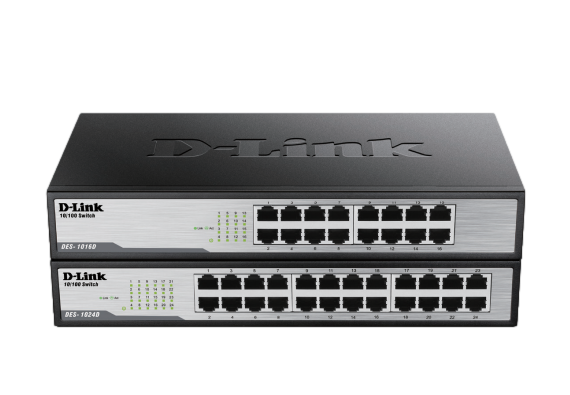

El DES-1016D es un switch Ethernet no administrado de la marca D-Link.
Hoja TécnicaEl modelo DES-1016D en particular es un switch de 16 puertos, lo que significa que tiene capacidad para conectar hasta 16 dispositivos mediante cables Ethernet. Estos switches son comúnmente utilizados en entornos domésticos, pequeñas oficinas u otras redes pequeñas donde se requiere conectar varios dispositivos, como computadoras, impresoras, cámaras IP, dispositivos de almacenamiento en red (NAS), entre otros.
Technical Specifications
| General | |
|---|---|
| Standards |
|
| LAN Standards |
|
| Data Transfer Rates |
|
| Functionality | |
| Port Packet Filtering/ Forwarding Rate |
|
| Switching Fabric |
|
| Number of Ports |
|
| Network Cables |
|
| Media Interface Exchange |
|
| LED Indicators |
|
| Transmission Method |
|
| MAC Address Table |
|
| MAC Address Learning |
|
| Packet Filtering /Forwarding Rates |
|
| Topology |
|
| Protocol |
|
| Physical | |
| Dimensions |
|
| Weight |
|
| Power Consumption |
|
| Heat Dissipation |
|
| MTBF |
|
| Temperature |
|
| Humidity |
|
| Certifications |
|